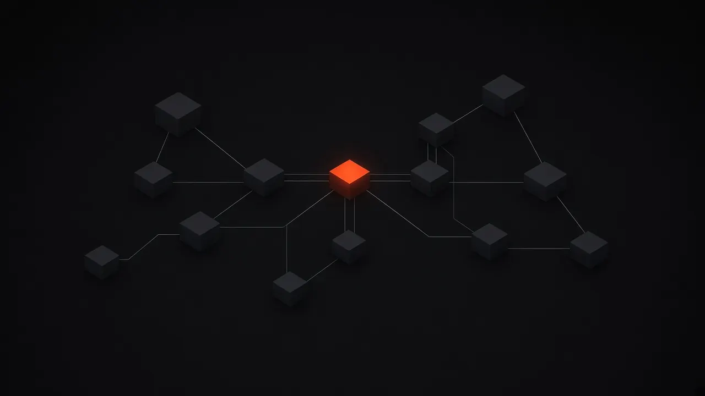
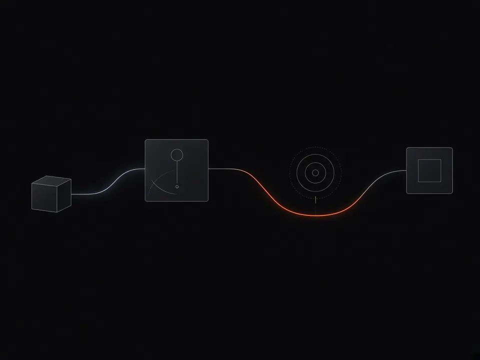

Relier
Le graphe réel
Équipes, logiciels, données, documents et partenaires, avec le flux qui les lie.
EXIOR — Enterprise transformation
Vos équipes ont les logiciels, les données et les compétences. Le temps part dans les passages : identifier le dossier, lire la donnée qui fait foi, demander une validation, écrire le statut, vérifier que l’étape est close.
EXIOR conçoit l’architecture de ces passages. Outils connectés, règles, agents spécialisés, permissions et validation humaine. La conception s’arrête avant le déploiement.
990 € · Votre architecture personnalisée sous 7 jours ouvrés
Conception personnalisée. Déploiement technique et exploitation proposés séparément, sur devis.

Meridian · entreprise fictive
Logiciels, dossiers et référentiels déjà en place chez Meridian.
L’événement ouvre un parcours : état, donnée qui fait foi, prochaine tâche.
Un agent spécialisé, une règle ou un collaborateur reçoit la tâche permise.
Décision, risque ou responsabilité : le flux s’arrête sur une personne.
L’écriture part dans l’outil autorisé. Le journal garde la trace.
Meridian n’est pas un client. La chaîne montre un fonctionnement conçu, pas un agent en production.
Chaque outil accomplit sa fonction. La coordination entre eux reste souvent humaine. C’est dans le passage d’un système à l’autre que se forment ressaisies, attentes et dossiers sans statut.
L’événement entre. Rien n’est encore un dossier.
La référence métier est cherchée à la main.
Une information est contrôlée dans un second outil.
Une question part, sans file d’attente ni échéance.
Le statut est recopié. La trace dépend de la personne.
Relier
Équipes, logiciels, données, documents et partenaires, avec le flux qui les lie.
Coordonner
Passage d’étape, permission, état du dossier, donnée qui fait foi.
Exécuter
Agent spécialisé, règle logicielle ou collaborateur. Le rôle est écrit.
Contrôler
Validation humaine là où la décision, le risque ou la responsabilité l’exigent.
Évoluer
Un outil ou un agent s’ajoute sans reconstruire l’organisation.
Un outil répond à un besoin isolé. Une automatisation exécute une séquence. Une architecture EXIOR nomme le déclencheur, la donnée, l’outil, le contrôle et le journal.
Une fonction. Pas le parcours.
Une séquence. Pas les exceptions ni la responsabilité.
Orchestrateur, agents, règles, validation, trace.
Nous analysons votre organisation et concevons votre architecture numérique évolutive. Livrée sous 7 jours ouvrés après réception du dossier complet.
990 € — paiement unique.
La mission de conception commence à réception du dossier complet. La mise en œuvre technique n’est pas comprise.
Trois scénarios de fonctionnement. Ce ne sont pas des automatisations promises, ni des clients.

Email entrant.
Identification de la référence.
Contrôle. Écart = exception.
Préparation comptable.
Une personne autorise l’action finale.
Détection dans le dossier.
Le message est préparé, pas envoyé sans règle.
Le dossier a un état.
Le collaborateur reçoit le cas, au moment utile.

Réception.
Préparé dans l’outil commercial.
Planifiée. L’imprévu revient à une personne.
Après l’étape qui la déclenche.
Ce sont des scénarios de fonctionnement envisageables dans une architecture, non des automatisations promises ou déjà livrées à l’achat du plan.
L’architecture prévoit les droits d’accès, la séparation des responsabilités, la traçabilité et les points de validation humaine. Un processus sensible ne part pas sur un agent sans contrôle.
Qui lit, qui écrit, dans quel outil.
La personne qui prépare n’est pas celle qui valide.
Chaque passage daté, rattaché à un rôle.
Le logiciel qui fait foi reste la référence. La sécurité du déploiement est spécifiée, pas réalisée dans les 990 €.
L’architecture distingue le socle et les ajouts. Vous décidez ensuite, pièce en main, ce qui part en déploiement.
Livraison sous 7 jours ouvrés après réception du dossier complet. Déploiement et exploitation sur devis.